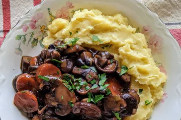

Description
French-Style Mushroom Stew is a rich and savory dish that features a medley of mushrooms, simmered in a flavorful herb-infused broth, often accompanied by wine and served with crusty bread.
Ingredients
- Mushrooms
- Butter
- Onion and garlic
- Dry white wine (optional)
- Vegetable or mushroom broth
- Fresh thyme
- Bay leaf
- Salt and black pepper
- Heavy cream and Fresh parsley (for garnish)
Steps
- In a large pot, sauté assorted mushrooms in butter until they release their moisture and turn golden.
- Add chopped onion and minced garlic. Sauté until softened.
- If using, pour in white wine and cook until it reduces by half.
- Add vegetable or mushroom broth, fresh thyme, and a bay leaf. Season with salt and black pepper.
- Simmer the stew for about 20-30 minutes to allow flavors to meld.
- Stir in heavy cream for added richness, if desired.
- Remove thyme sprigs and the bay leaf. Garnish with chopped fresh parsley.
- Ladle the French-Style Mushroom Stew into bowls and enjoy.